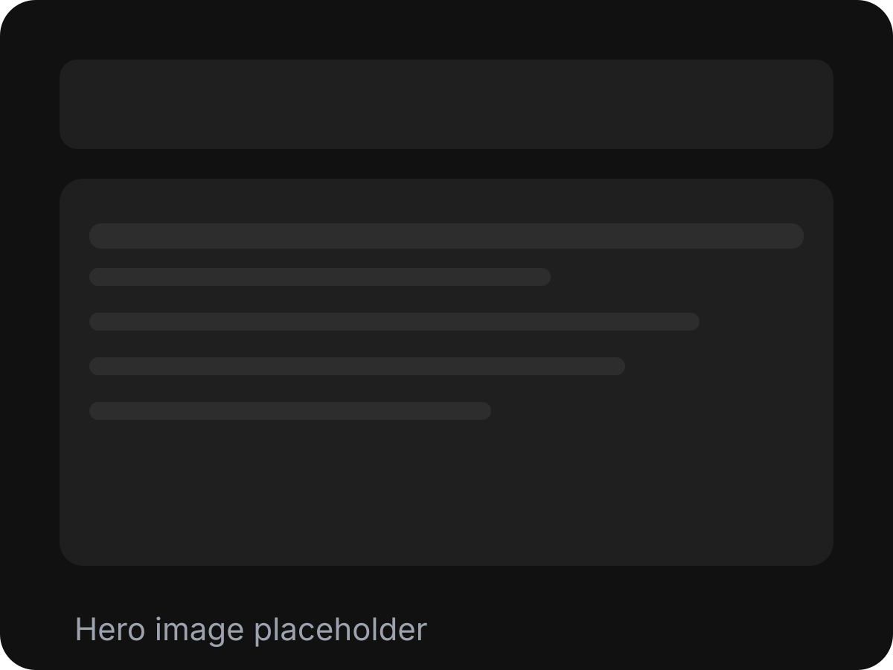
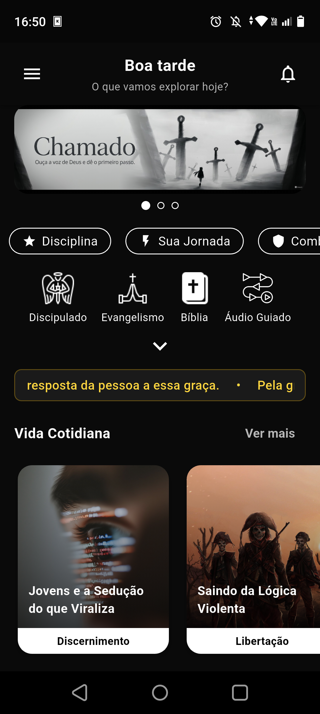
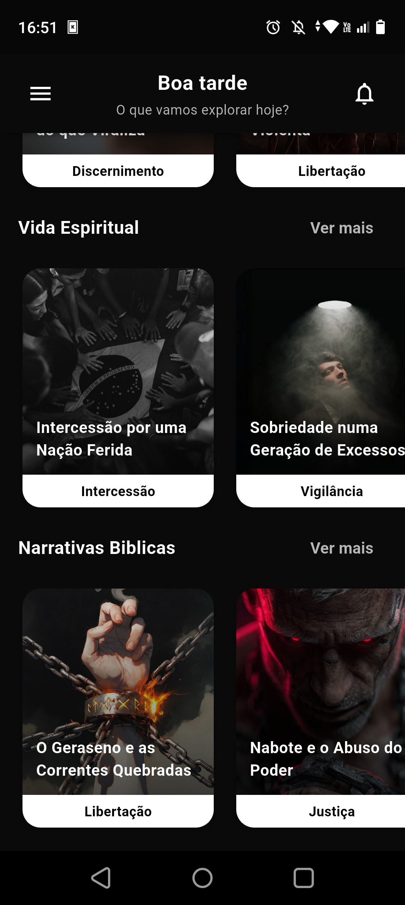
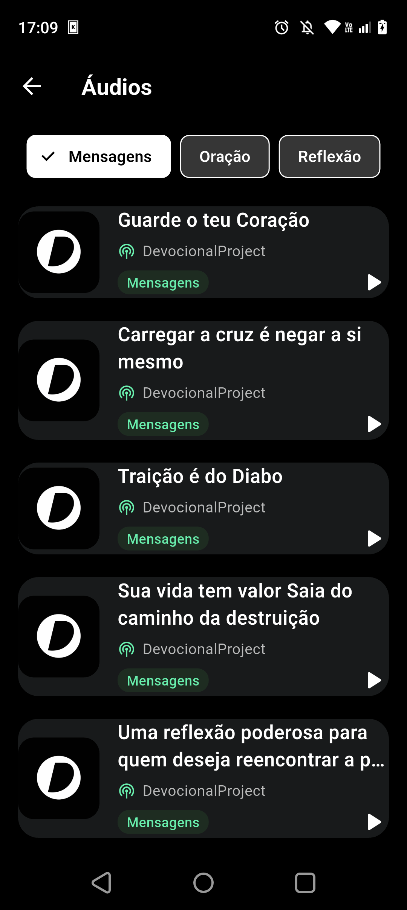

Controle de Acesso
Na fase de teste, apenas membros selecionados têm acesso. Seu feedback direto molda o futuro do app e garante qualidade máxima.
Fase de Teste — Acesso Exclusivo
Um espaço digital dedicado à meditação, leitura bíblica e conexão espiritual. Devocionais diários, estudos profundos e uma comunidade de crentes que buscam crescimento contínuo em sua caminhada com Deus.

Lançamento 2026Acesso imediato a devocionais preparados por líderes espirituais, com reflexões que transformam sua rotina.
Sobre o Devocional
Desenvolvido com dedicação, o Devocional nasce da convicção de que fé e tecnologia podem se encontrar. Cada funcionalidade foi pensada para aproximar você de Deus de forma significativa, oferecendo recursos que fortalecem diariamente sua vida espiritual e comunitária.
Na fase de teste, apenas membros selecionados têm acesso. Seu feedback direto molda o futuro do app e garante qualidade máxima.
Devocionais preparados por pastores, teólogos e líderes espirituais com anos de experiência, oferecendo reflexões profundas e aplicáveis ao seu dia a dia.
Design limpo e funcional que coloca o foco no que importa: sua jornada espiritual. Navegação fluida em qualquer dispositivo.
Interface do App
Cada detalhe foi pensado para oferecer uma experiência transformadora. Veja como o Devocional acompanha sua jornada de fé.

Comece cada manhã com uma reflexão autêntica e versículos cuidadosamente selecionados para guiar sua fé.

Acesso a materiais de estudo bíblico, comentários teológicos e guias de meditação para quem quer ir além.

Ouça versões narradas dos devocionais com áudio de alta qualidade, ideal para estudo em movimento e momentos de meditação.
Diferenciais
Não é apenas um app. É uma comunidade, um guia espiritual e um parceiro diário na sua caminhada de fé com tecnologia moderna ao seu alcance.
Seus dados espirituais são sagrados. Criptografia de ponta e total respeito à sua privacidade.
Conecte-se com milhares de crentes que compartilham sua visão de fé e propósito. Suporte, inspiração e crescimento contínuo.
Receba lembretes personalizados na hora certa, respeitando seu ritmo e preferências espirituais.
Junte-se ao Movimento
Testadores selecionados estão moldando o futuro do Devocional. Se você busca aprofundar sua fé com tecnologia, este é seu momento.
Entre em Contato
Envie suas sugestões, dúvidas ou pedidos de acesso ao teste fechado. Nossa equipe responde rapidamente para apoiar sua jornada espiritual.
devocionalproject@protonmail.com
Entre para a comunidade oficial do ProjetoDevocional no WhatsApp e conecte-se com participantes do teste fechado.
Entrar na ComunidadePágina Hospedada em um repositório GitHub e compartilhada para fins de Divulgação.